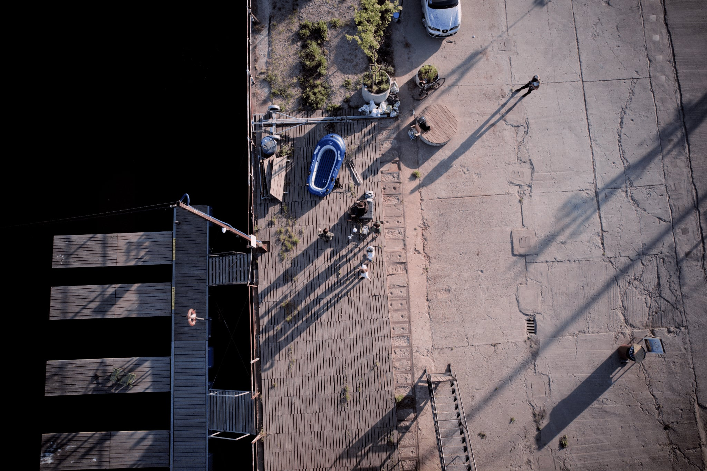

Zbudowane pojazdy
Najwyższa pozycja zdobyta w konkursach
Rok założenia
W programie SeaSentinel wierzymy, że za trendami nie wystarczy podążać. Trzeba je wyprzedzać. Obserwując sytuację, tak w naszym regionie, jak i na całym świecie, zauważamy rosnące zapotrzebowanie na rozwiązania pozwalające skutecznie i wydajnie patrolować wody przybrzeżne, jako że obszary te są kluczowe dla krajowej gospodarki, bezpieczeństwa i środowiska. Dlatego przez ostatnie kilka lat rozwijaliśmy koncepcję i budowaliśmy Autonomiczne Pojazdy Nawodne (ASV) z zamiarem stworzenia w pełni autonomicznej, niezawodnej i modułowej platformy o dalekim zasięgu. Nasze pojazdy odniosły sukces w międzynarodowym konkursie RoboBoat w Sarasocie, USA. W 2023 roku, ASV “Perkoz” zajął 9. miejsce, a w 2024, ASV “Rybitwa” osiągnęła 7. miejsce na świecie.


Autonomiczne nawodne jednostki morskie (Maritime Autonomous Surface Ships) są jednym z głównych kierunków rozwoju przemysłu morskiego w XXI wieku. Program SeaSentinel zrodził się z wizji bezpieczniejszego i bardziej opłacalnego świata morskiego. Naszym celem jest kształcenie studentów Politechniki Gdańskiej w zakresie pojazdów autonomicznych.
Dzięki pracy w ramach Programu studenci mają możliwość zdobycia lub rozwinięcia zarówno umiejętności technicznych, takich jak modelowanie 3D, programowanie, lutowanie, projektowanie płytek PCB, druk 3D, praca z dokumentacją techniczną czy wytwarzanie elementów z laminatów, jak i kompetencji miękkich, takich jak praca zespołowa, komunikacja, samoorganizacja, kreatywność i dyscyplina. Cel ten realizowany jest poprzez budowę i rozwój technologii autonomicznych pojazdów nawodnych.

Nasz pierwszy autonomiczny pojazd nawodny, zaprojektowany i zbudowany z myślą o udziale w konkursie RoboBoat. Zajął 9. miejsce spośród 21 startujących zespołów.

Nasz drugi pojazd autonomiczny, wyposażony w ulepszone systemy nawigacji i sterowania. Zajął 7. miejsce spośród 16 zespołów w konkursie RoboBoat.

ASV Zimorodek to trzeci autonomiczny pojazd nawodny zbudowany przez nasz zespół, zaprojektowany z myślą o konkursie RoboBoat 2025.

Programme Manager
Mechanical Team Leader

Special Advisor

Electrical Team Leader

Deputy Electrical Team Leader

Electrical Engineer

Electrical Engineer

Electrical Engineer

Electrical Engineer

Deputy Programme Manager
Deputy Mechanical Team Leader

Mechanical Engineer

Mechanical Engineer

Mechanical Engineer

Concept Artist Designer

Onboard Processing Team Leader

Deputy Onboard Processing Team Leader

Software Developer

Software Developer

Software Developer

Software Developer

Software Developer

Software Developer
Mechanical Engineer

Software Developer

Business Officer

Business Officer